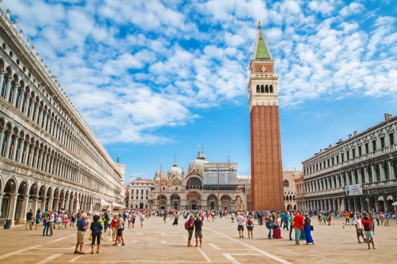
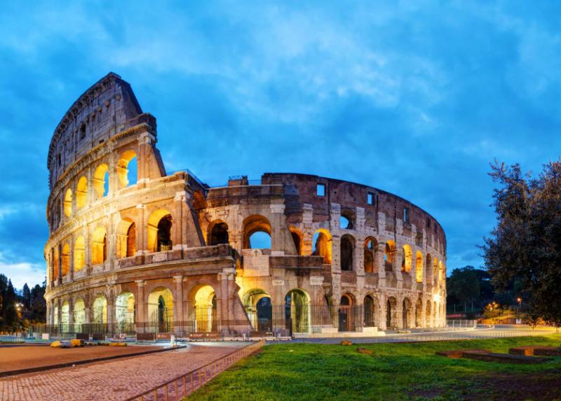

The richness of Italian civilization incorporates history and heritage through art, architecture,
and gastronomy acting as a celebration of culture with unquestionable inimitable style,
endless feasts, and sensational landscapes. Sacred sites and medieval villages, lavish
churches, and scenery imitating art, the ambiance of Italy derives from a fantastical
culture basking in the daily revelries of life, from a simple sip of espresso to the aromas
of a slow cooking stew.
Exploring Italy takes you face-to-face with icons of Western Civilization, such as the
Colosseum and the Leaning Tower of Pisa, to witnessing expressions of the soul in the works
of Leonardo da Vinci’s The Last Supper, Michelangelo’s David, or Botticelli’s The Birth of
Venus. Playful baroque fountains grace the public piazzas of Rome, and elegant statuary adorns
the nave of the Sansevero Chapel in Naples. The trails of the past take you past the Roman
empire to the Greek settlements of Southern Italy and Sicily or along the famous pilgrimage
route of Via Francigena, which connected France to Rome during Medieval times.
Luxury, wonder, and adventure cross paths around the Italy’s more than 116,000 square miles,
featuring over 4,700 miles of coastline along the Adriatic, Ionian, and Tyrrhenian seas.
The fascinating preservation of Italy’s past has attributed to the nearly 50 different
UNESCO World Heritage sites scattered around the Italian peninsula. The diverse landscape and
captivating wildlife of Italy escape the awareness of visitors interested in nothing more than
capturing the culture of the main three cities of Rome, Florence, and Venice, however, Italy’s
treasures go beyond the beauty inside the preserved historical centers of villages, towns, and
cities across the peninsula by protecting its varied scenery spanning the arid plains and craggy
gorges of the south, rolling lush hills at the heart of Italy, and snowcapped peaks of the
Dolomites and Alps in the north.

The remarkable history of civilization in Italy dates back to the 18th century BC, but the history
of the unified country began in the 1860s during the Risorgimento, during which time Vittorio
Emanuele II, king of Sardinia liberated the territories of Italy occupied by the French, Spanish,
, and Austro-Hungarians. The Republic of Italy is even younger, beginning after World War II
and the end of Mussolini’s fascist regime.
The aftermath of the Second World War left Italy with a shattered economy and divided society.
The king, Vittorio Emanuele III, abdicated the throne and the new king, Umberto II, called for
a Constitutional Referendum, which ended the Italian monarchy by placing a republic in its
stead by mid-year 1946. The post-war economic growth cooled by the early 1970s and has since
rebounded only in popular tourist destinations and the industrial cities of the north.
